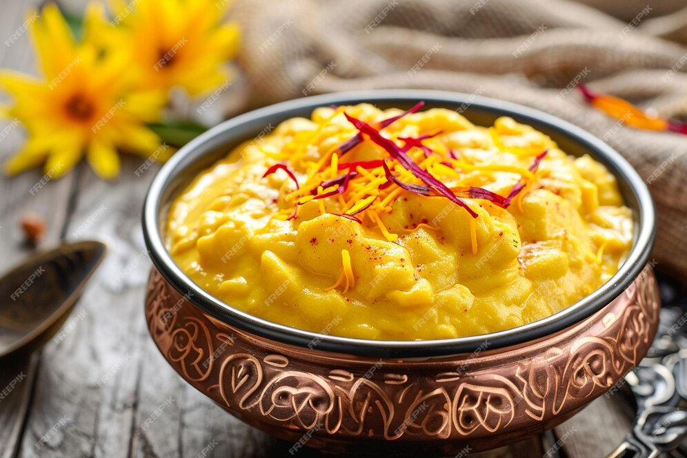

Ingredients For the Ras Malai:
1 liter (4 cups) whole milk
1 cup sugar
1/2 teaspoon cardamom powder
1/2 teaspoon rose water (optional)
1/4 cup slivers of pistachios and almonds
2 tablespoons lemon juice or vinegar
1/4 cup water (for curdling the milk)
1 liter (4 cups) whole milk
2 tablespoons lemon juice or vinegar
1/4 cup water (for curdling the milk)
1 Boil Milk: Heat the milk in a large pan over medium heat. Stir occasionally to prevent it from sticking to the bottom.
2 Curdle the Milk: Once the milk comes to a boil, add the lemon juice or vinegar mixed with water gradually while stirring. The milk will start to curdle. If it doesn’t curdle completely, add a bit more lemon juice or vinegar.
3 Drain the Curds: Once the milk has fully curdled, turn off the heat. Pour the mixture through a cheesecloth or a fine sieve to separate the curds from the whey. Rinse the curds under cold water to remove any acidity.
4 Press the Curds: Gather the cheesecloth and squeeze out excess water. Place the curds on a flat surface and press them down with a heavy object for about 30 minutes to remove more moisture.
1 Prepare the Paneer Balls: After pressing the curds, knead them gently to form a smooth dough. Divide this dough into small balls and flatten them slightly to form discs.
2 Cook the Paneer Balls: In a large pan, bring water to a boil. Drop the paneer discs into the boiling water. Reduce the heat and simmer for about 10 minutes, or until the discs are cooked through and puffed up. Remove them from the water and set aside.
3 Prepare the Milk Mixture: In a separate pan, bring 1 liter of milk to a boil. Reduce the heat and simmer until the milk reduces to about half its original volume.
